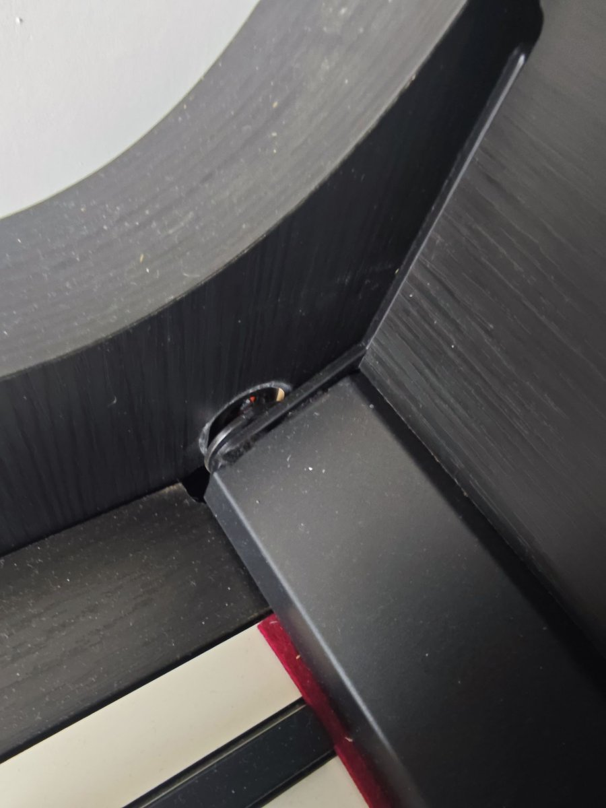
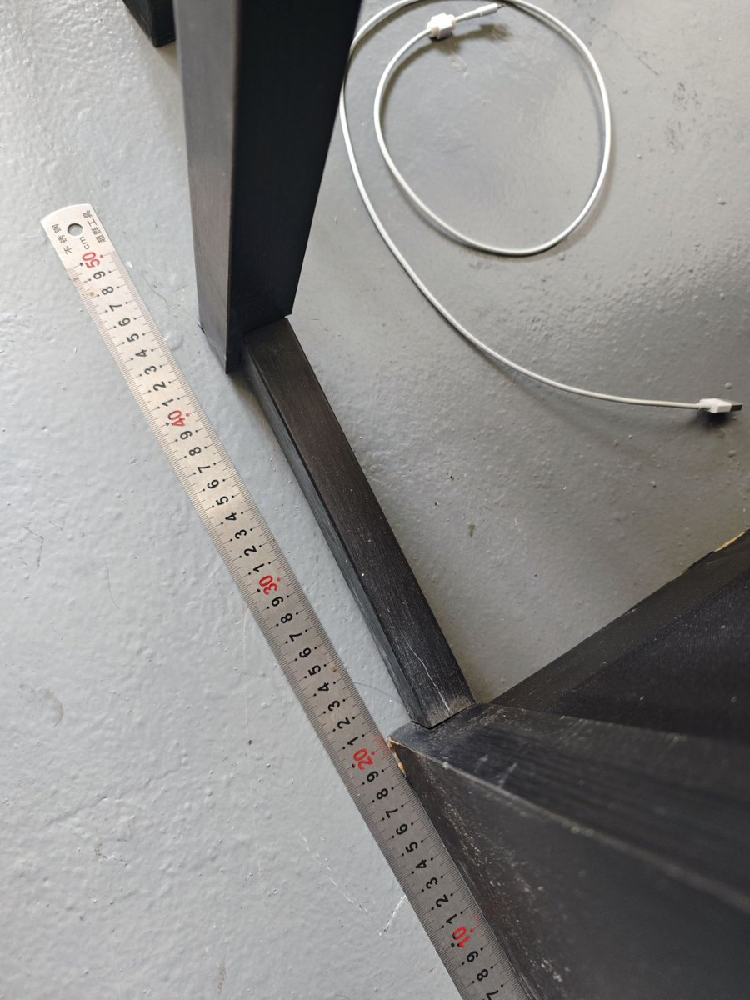
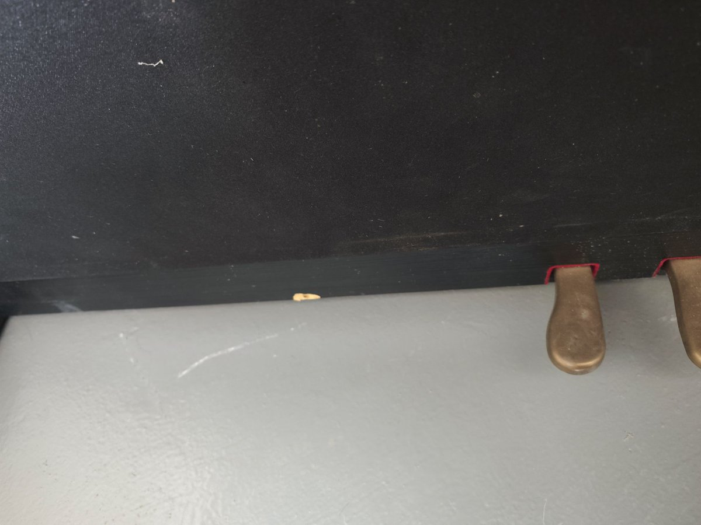

寒涟漪
@HANLIANYI331
德邦物流把我故友留下来的罗兰电钢琴琴盖横轴给弄坏了，钢琴磕碰出了很多划痕，支撑架出现弯曲，钢琴价值三万多元，维修按照市场价估算大约2500元。就这还是我寄钢琴时花了六百块钱保价三万元，打了木架的结果。
然后从一个月前我就一直在向德邦物流索赔，一直给我拖泥带水拖延到现在。
上一次寄德邦还是在2016年时，德邦给我八台手机搞进水，结果最终拒不认账，拒不赔偿的事情，真没想到这么多年，德邦一点死性都不改。
以前寄贵重物品包括钢琴用跨越物流，运送过很多次，就从来没有出过任何问题。


